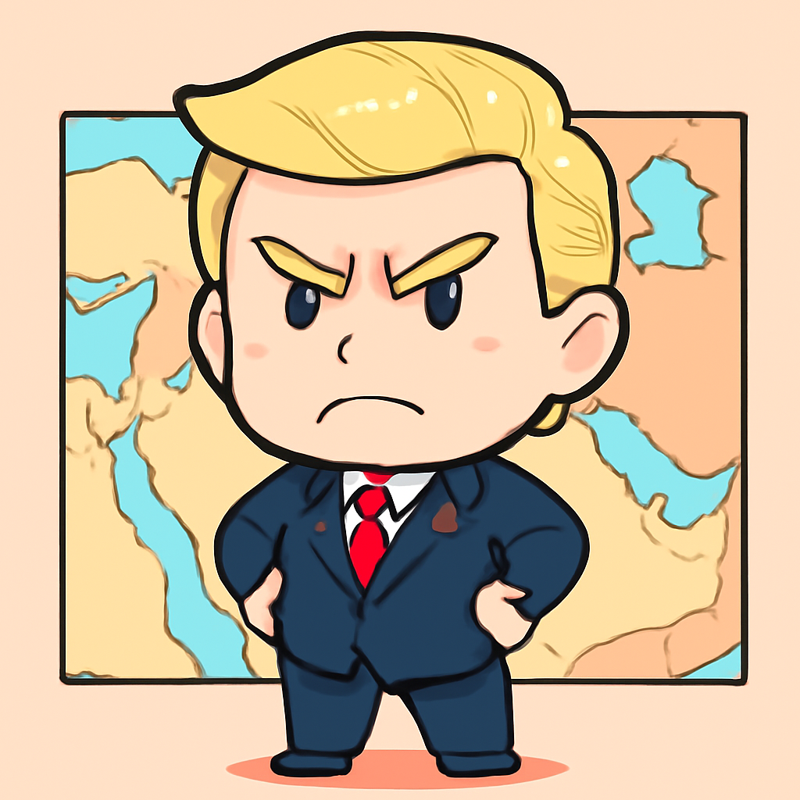
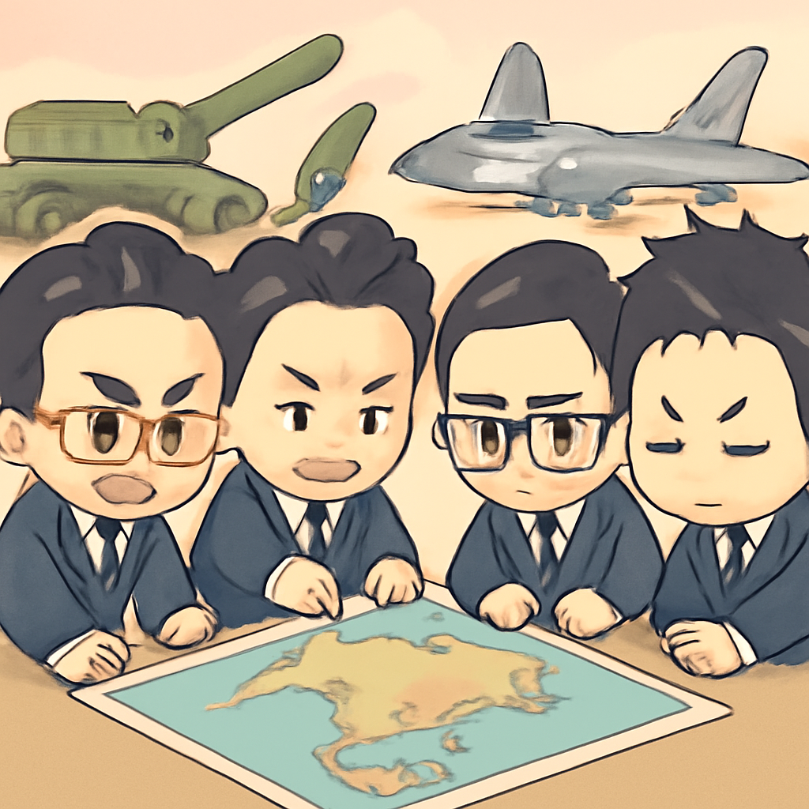
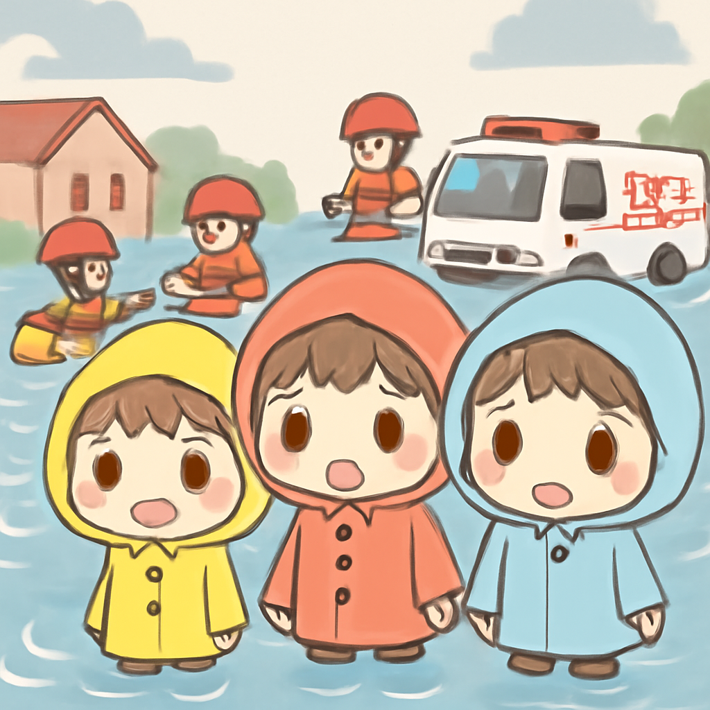

其一 · 美國華府 · 特朗普堅持霍爾木茲海封鎖不解除
美國總統特朗普強調不會解除對伊朗的封鎖

在美國華府，特朗普總統表示，若與伊朗未達成協議，他將繼續對霍爾木茲海進行封鎖。隨著巴基斯坦即將舉行和平會談，伊朗是否參加仍不明朗，讓局勢更加緊張。這樣的發言讓國際社會更加關注中東地區的和平進程，真是一場貿易與外交的微妙舞蹈。
🔗 原始新聞 ↗
2026-04-21 · 以古觀今，以笑抗愁
美國總統特朗普強調不會解除對伊朗的封鎖

在美國華府，特朗普總統表示，若與伊朗未達成協議，他將繼續對霍爾木茲海進行封鎖。隨著巴基斯坦即將舉行和平會談，伊朗是否參加仍不明朗，讓局勢更加緊張。這樣的發言讓國際社會更加關注中東地區的和平進程，真是一場貿易與外交的微妙舞蹈。
🔗 原始新聞 ↗
日本決定放寬武器出口，打破戰後和平主義

在東京，日本政府宣布放寬武器出口規則，讓日本可以向十多個國家銷售武器。這是自第二次世界大戰以來的一大轉變，反映了面對中國威脅的緊迫感。這一政策改變可能會影響亞太地區的軍事平衡，讓人不禁想問：日本是想成為軍火商，還是未來的安全防衛者？
🔗 原始新聞 ↗
阿根廷總統米萊成功控制通膨，欲改變國家價值
在布宜諾斯艾利斯，阿根廷總統米萊宣布，他不僅成功控制了國家的高通膨，還打算重塑國家的價值觀。這名右派領導人希望通過改革來改變阿根廷的經濟格局，然而，改變價值觀可不是賣香腸那麼簡單，這場改革之路注定充滿挑戰。
🔗 原始新聞 ↗
墨西哥古蹟發生槍擊事件，加拿大遊客不幸遇難
在墨西哥特奧蒂瓦坎，發生了一起槍擊事件，導致一名加拿大遊客喪生，數人受傷。這樣的事件發生在世界盃即將舉行之際，無疑對墨西哥的旅遊業帶來了打擊。希望未來這些古老的金字塔能夠重回平靜，不再被暴力事件所困擾。
🔗 原始新聞 ↗
新西蘭首都惠靈頓遭暴雨襲擊，當地宣布緊急狀態

在新西蘭惠靈頓，連日暴雨造成嚴重洪災，當地宣布緊急狀態，超過100所學校關閉，發生多起山崩和洪水事件。這場雨水似乎不給人留情面，讓當地居民不禁想問：難道是老天爺對這座城市的考驗？希望他們能快點重回正常生活。
🔗 原始新聞 ↗